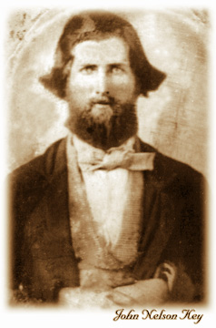

|  |
John Nelson Key, from Emanuel County, Georgia, joined up with his nephews, sons of his brother Burrell Kea, also from Enamuel County. The nephews were named Dennis Kea, James Kea and Wesley Kea.
Burrell had changed his family name from Key to Kea after he found the name carved on an old chair from England. The rest of the family kept their name as Key.
According to the muster roll of Company G, 32d Regiment, Georgia Volunteer Infantry, Army of Tennessee, C. S. A., John Nelson Key was appointed 5th Sergeant on May 7th, 1862. (Daryl - see below - feels certain that John's brother Warren also joined and was later killed in action.)
Sgt. John Key died at at Battery Harrison near Savannah, Ga. August 15, 1862, but not from combat. Like two-thirds of the soldiers who died in the Civil War, John died of other causes.
Sgt. John Nelson Key, of the Confederate army, was home on furlough when a daughter was born on August 1, 1862. According to Aunt Callie Pollette Kindon, (Key family) when he took the train back to Savannah, he rode in the open and was exposed to a rain storm. He became ill and died on August 15, 1862 of pneumonia.
Although John Nelson Key had been dead almost two years when the Battle of Olustee was fought, his photograph is one of the few we have of members of the 32nd Georgia and is included here for that reason. The Keys (and Keas) were typical of the men who joined this regiment early in the war.
According to the muster roll of the 32nd Regiment Georgia Volunteer Infantry, Wesley Kea, John's cousin, was appointed 4th Sergeant of Co. E, 5th Regiment Ga. State Troops on October 12, 1861. He mustered out in May, 1862 and enlisted as a private in Co. G, 32d Regiment Ga. Inf. May 7, 1862.
Wesley Kea was admitted to C.S.A. General Military Hospital #4, at Wilmington, N. C. with fever, January 5, 1863. He returned to duty January 21, or 31, 1863. No futher record of his activities while in service is available.
Thank you to Daryl Hutchinson (dlhutchi@corpserve.delta.edu), g-g-grandson of John Nelson Key, for providing the photograph of John Nelson Key and a brief history of the Key (Kea) family in the war.
Thirty-second Georgia Infantry Regiment
Battle of Olustee Home Page
http://extlab7.entnem.ufl.edu/Olustee/